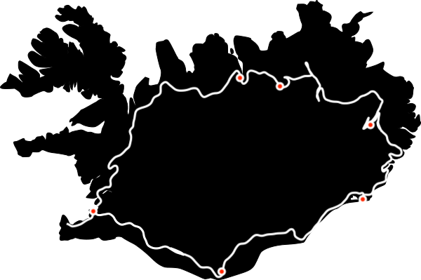
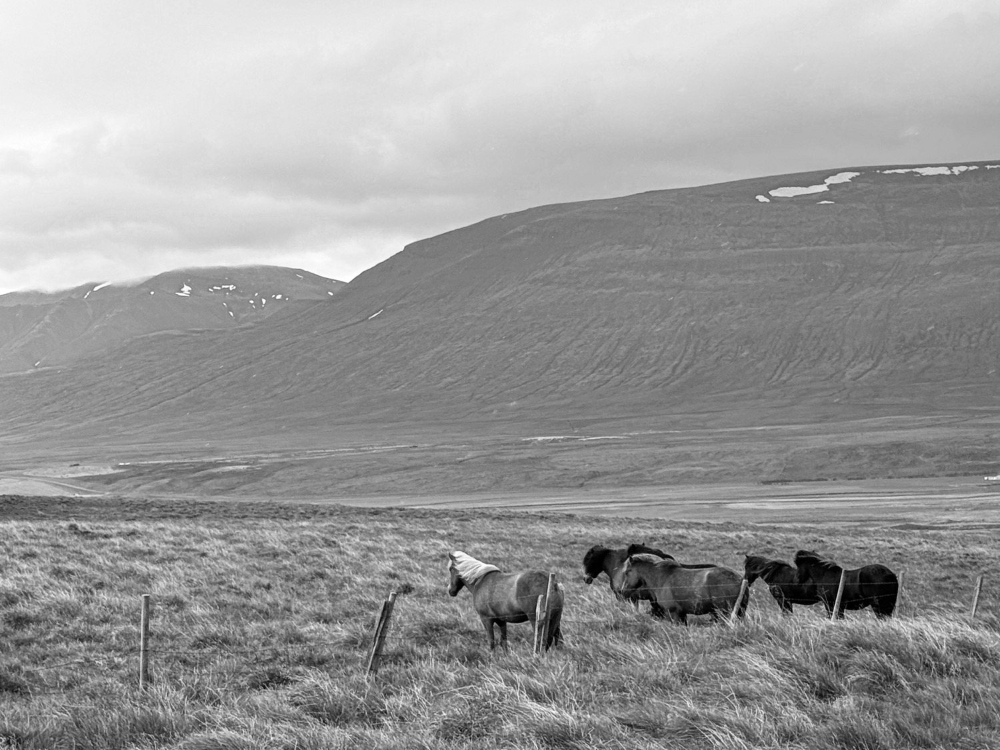
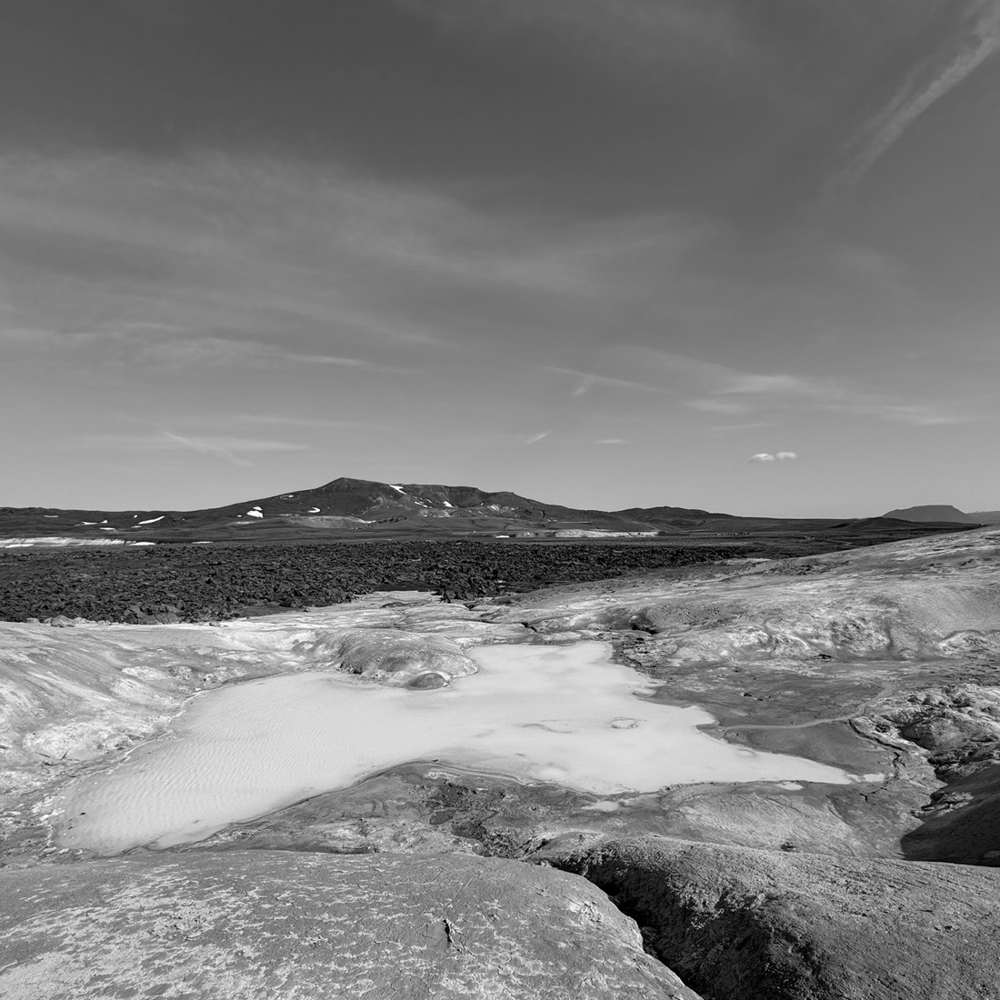
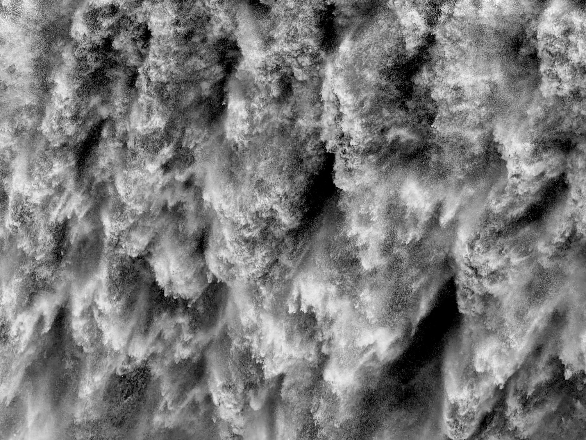
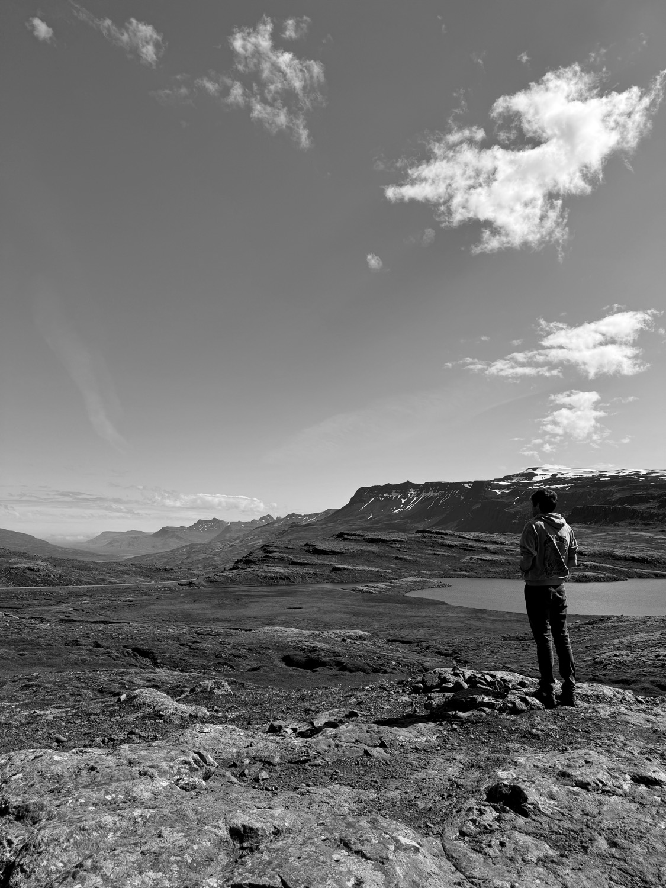
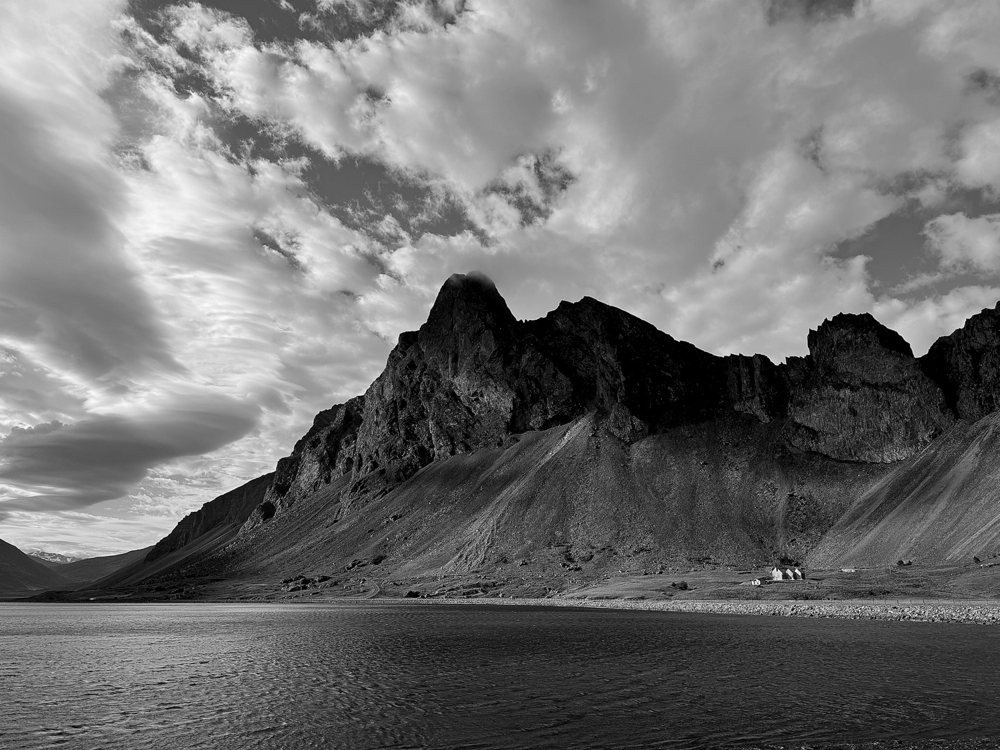
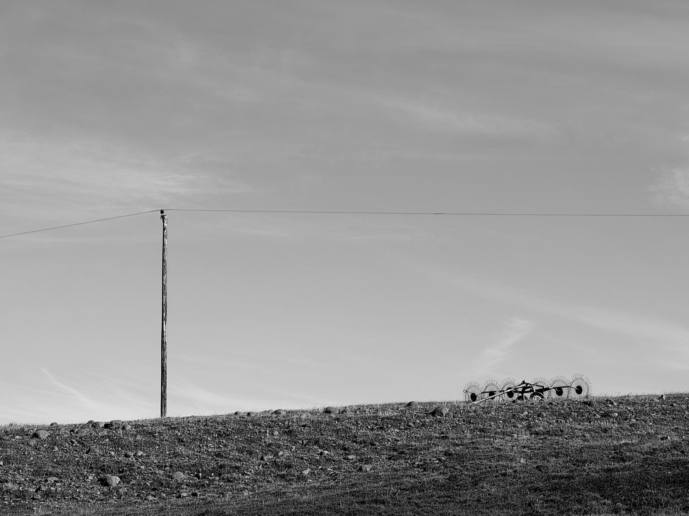
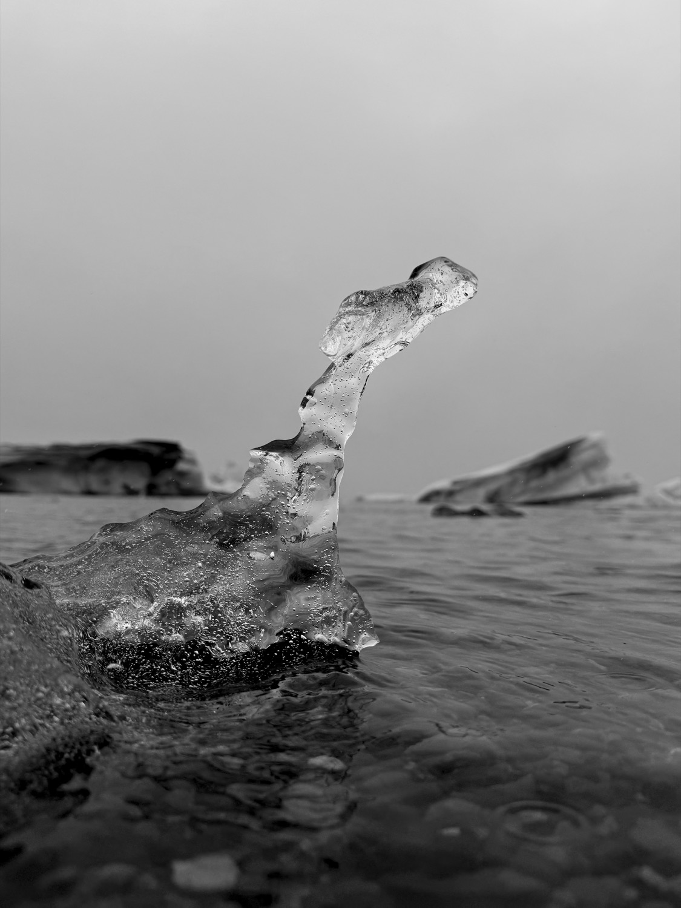
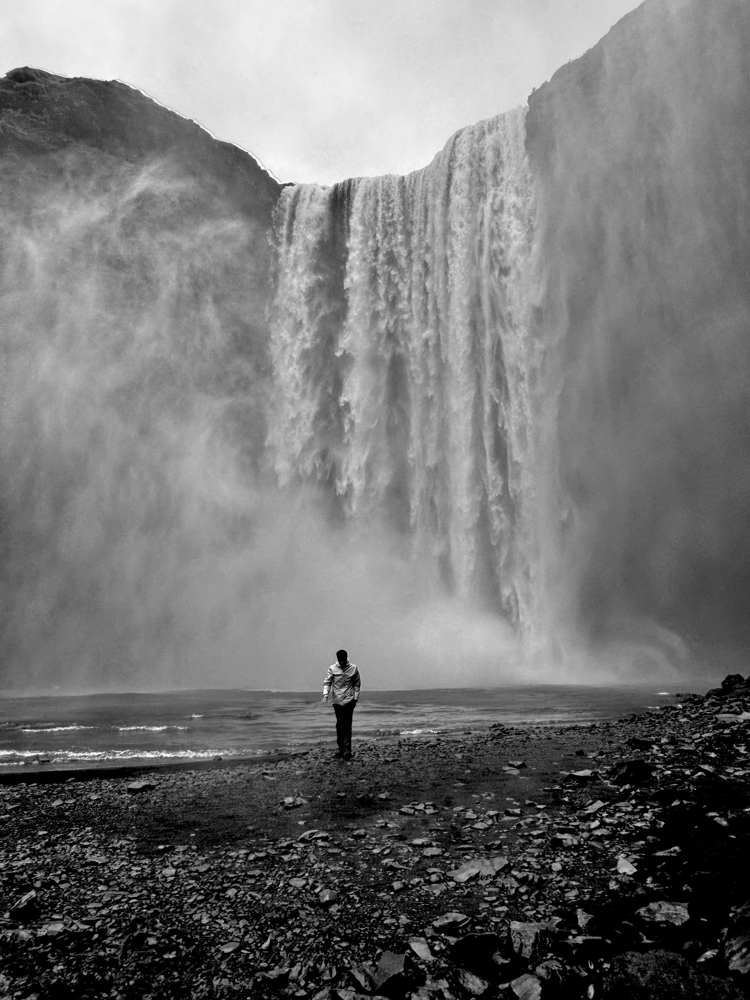

Driving the Icelandic Ring-Road
Góðan daginn. I turned thirty this year (2024) and despite my best efforts I failed to resist the urge to spend thousands on an international adventure. Iceland was never really on my radar as a critical travel destination, I figured I'd get there eventually, and from what I had seen from friends' social posts it seemed like an interesting place to visit for a few days. And so it happend I was alerted to a set of cheap flights over to the island that happend to overlap with my birthday. The resulting trip though would be 8 days, and so I started looking for more ambitious excursions away from the tourist centers (which, in such a dedsolate place, constists only of the capital city Reykjavík and things around it within a 2 hour drive). I eventually landed on renting a car and driving the entire circumfrence of the country, along its famed ring-road. I enjoy driving long distances anyway, and why not through a place that's probably fairly interesting to look at. And so I went for it, booking accommodations through a state-run tour company to eliminate all stress of guessing how far I would need/could travel each day. They sent me the confirmed itinerary a few days later. It would be tough, driving a few hundred kilometers every day for a week straight. But I knew I could do it, and hell it might even be worth it.
Day 1: Reykjavík
We landed around 6am Iceland time, had no problem getting the rental car (a little Kia hatchback which proved to be a beast of a touring car) and immediately jetted off for the capital. Our first taste of the arctic summer was a windy, rainy, cloudy cold (54F) day. A picture perfect average summer day in West Iceland. Absolutely miserable. And it could not have been more welcome. Southwest Iceland is the only true metropolized region of the country, with 90% of the country residing in and around the capital and airport city Keflavík about a 45 minute drive away. The drive to the capital did not feel as alien as I expected. The landscape was fairly unique, but honestly looked very similar to Hawaii to me: very green (but with moss and no trees), lava rocks, and rain. Reykjavík itself is a cute city, very walkable (the entirety of the city is about the same geographic size as Center City Philadelphia; the population is 1/10th that of Philly). We spent the majority of the day walking around taking pictures and snacking, doing our best to stay awake the whole day to fend off the jetlag. We did some grocery shopping at Bonús to prep for the long drives ahead. We ate dinner at a nearby food court and retired. I'll note now that it does not get dark there in the summer. The sun sets at 11:45pm and rises at 3:30am.
Day 2: To Akureyri

The day of my 30th birthday. Also our longest driving day, around 400km. It's reassuring, driving during the arctic summer, you'll never have to drive in the dark. But we did have a 6:30pm dinner reservation in Akureyri (the "capital of the north", 20,000 people live there), a quarter way around the country so we couldn't take our time too leisurely. We made a few stops along the way to do a short hike up a volcanic crater and around a canyon and waterfall. Akureyri itself is a funny mix of a fishing town, ski resort, and cruise ship stopover. Much development seemed to be going on, several apartment structures going up. We had a 7 course excelent meal at North and wandered the one-block downtown to get a beer (Gull and Viking Gylltur and the two most popular beers in the country by far).
Overall, both an extremely long and yet short day. More than a few times I had doubts creep in that perhaps we were in over our heads. How much could we really do and see while trying to drive so much? Can we really handle moving on to a new hotel every day, no base of operations? The only way to know is to keep moving.
Day 3: Mývatn and Geothermics

This was our shortest driving day, only 45 minutes to our next hotel: Laxá Hotel at Lake Mývatn. Everything in this area of northern Iceland is remote any "towns" that one might encounter consist of only a few dozen people. Laxá Hotel stands out in this regard as a ultra modern refuge in an otherwise empty landscape. It has large floor to ceiling windows ideal for aurora viewing in the winter, a sod roof and parking lot hidden from the road. There are no trees in this part of Iceland and it lies in the rainshadow of the Vatnajökull glacial volcano so there are only high altitude wispy clouds. And so the hotel sits under a seemingly unending sky. Laxá was incredible, especially the food. It was also unexpectedly warm here, low 70s, low humidity.
Interestingly the largest industry in the area by far is Geothermics. The entire area in and around Lake Mývatn is extremely volcanically active. Devastating eruptions and lava flows covering hundreds of square miles have affected the region as recently as the 1980s. We drove to and walked through this very lava flow, the ground there is still warm and hydrogen sulfide still leaks from the ground in mudpits and thermal pools. The image above is of a pool of highly saturated water with the recent lava flow in the distance. Nearby is Krafla geothermal powerstation, constructed within the last 20 years to take advantage of the superheated water just under the arid surface. Geothermics provide Iceland with much of its electricity and nearly all of its hot water supply.
That night, we stayed up to watch the midnight sunset at a cluster of volcanic craters at the edge of the lake. Arctic terns swooped overhead feeding on the abundant midges (Mývatn translates to "midge lake"). They have the longest migratory path of any species, by year's end the ones we saw diving and feasting in the glow of eternal arctice summer twilight will be in Antartica 22,000 miles away.
Day 4: High Deserts and Hallormsstaður Forest

Northern Iceland is barren. Like BARREN barren. Essentially no one lives here, the land is too rocky or toxically sulfuric for anything to grow. We drove for a few hours and did not see a single bush, let alone a tree. Within this desert highland though is Europe's most powerful waterfall: Dettifoss. I think of it as the waterfall in the opening scene of the Alien prequel Prometheus. It was fantastic to see in person. We also explored a canyon lined with hexagonal basalt columns, a surreal geologic cathedral whose steep pitted and rocky mountain road made for fewer crowds (shoutout to our little Kia which somehow managed to come out unscathed from all of this).

Climbing over a final mountain range we decended into a lush landcape full of young trees: Hallormsstaður Forest, the largest forest in the country. During our decent through the mountains I was timing how long between sightings of some precence of humanity (other than the ring-road itself). There was nothing out there. No other cars, no signs, no fences denoting land ownership, no powerlines in the distance, no sheep or horses. Nothing. Mostly, I would time several minutes before seeing another car on the horizon. But my highest count was 23 mintues. It was at this point that I realized how utterly unique and otherworldly the Icelandic landscape is. I felt like I was in World of Warcraft. In a single day we drove through rancid sulfur fields, rainshadow deserts of volcanic rock veined with enormous rivers and waterfalls, into a barren mountainous nothingness, and finally a lush forest.
We ended the day at a geothermal springs nestled on the shore of a mountain lake. The thermal pools were positioned within the lake itself so we would jump from the 105F degree water into the 50F degree lake.
Day 5: Decent to Höfn

260km of driving today. Started in Hallormsstaðaskógur forest, the largest in Iceland. We learned from the Icelander working the National Forest visitor center that the warm weather we had been experiencing in the north-west island regions was very rare, and unbenownst to us every Reykjavík resident had been scrambling to make the 7+ hour drive to the region to camp and enjoy the outdoors. Truly a country-wide phenomena. We ate at a museum/restaraunt for a lunch buffet where the chefs seemed to be the Moms of the area and were turning out cakes and pies and stews and cooked vegetables, and breads at a breakneck pace. Delicious. After, we carved through a steep mountain pass descending down into Fjarðabyggð. The landscape here truly took my breath away. It (as with most of the Icelandic splendor) is difficult to put into words. The valleys we drove through looked like Eden. Like the most fertile, peacful farmland I have ever seen. The entire valley had maybe 5 pasture farms within, each with thousands of acres. All grazing land for sheep. "Picturesque" does not come close. The sun cast itself through the peaks of the ice-capped mountains to the valley floor and saturated the endless green of the grazing fields. I could not believe what I was seeing, I truly could not believe that a place as serene as this could still exists on this Earth. And yet there it was. Descending 1000m or so we finally reached the coast after the 2 days in the Icelandic interior. Pictured above is one of the farmsteads at the base of these towering crumbling mountains that dominate the southeastern shore.

This is a good time to note that my book of choice during this trip was The Unsettling of America by Wendell Berry. I chose this deliberately because I had anticipated this trip would trigger intense reveleations as to humanity's place in nature, a lost perspective on how agriculture was and perhaps should be. The book (as far as I have read at the time of this writing), offers heavy critiques on American "agripower" and the divorcing of the average American from the land from which they are fed. I particularly enjoyed the book's commentary on the "Crisis of Culture" that exists in American conservation efforts. So often, conservation is pitted against human nature, offering the senes that to conserver or preserve nature we must fight against the very existence of humanity. But Berry argues that this defamatory self-hatred is inherently misguided, and that the conversation of conservation must be one of harmony and coexistence, not a battle against oneself. After all, the very act of existing is to take up space in nature. To consume is not to destroy. Consumption is nature. The battle we now face is one of self-reflection. I do not intend to speak for those living in Fjarðabyggð, but I wish I could hear their thoughts on their place in that Eden.
We ended in Höfn, a fishing village with not a lot to offer. The weather had returned to its usual 50F, windy, and rainy. We had been worn down by this point and resigned to have a nice meal and call it a day. We had Icelandic langoustine and horse steak. My first time eating horse, surprisingly quite good.
Day 6: Glacial Floodplains and Vík

200km more of driving today. All along the southern Icelandic coast. It was still rough coming back to the more “typical” weather of midsummer Iceland: cold, rainy, and windy. We were missing the shelter of the highlands to say the least. There were many more tourists here. This means an elimination of any worry for finding food or a bathroom, but with wild and untouched lands are far behind us.
Much of southern Iceland is still remote, but in a different way. Mossy lava fields and miles-wide black sand beaches dominate the low lying glacial floodplains. But there is always evidence of humanity outside of the ring road: fence posts denoting land ownership, the rare troop of sheep, power lines. Driving inland is not much of an option, you are immediately greeted by one of the towering tongues of ice of Vatnajökull. Pictured here is a small piece of that ice that has broken away and floated down one of the glacial lagoons.
Regions of this part of Iceland have been repeatedly blasted clean by enormous apocalyptic floods triggered by volcanic eruptions beneath the glacier, as recently as the 1990s. The resilience of the Icelandic people and their saga is incredible, and I hope to learn more in the coming months as I reminisce.
Day 7: Reykjavík Again
And then: our final full day. We were tired of the cold rain at this point, especially after the heat and sun of the desert highlands. Though we did make time to investigate the black sand beach at Vík and were very surprised to see puffins there. I had assumed we probably would not see puffins, thinking they only nested in the north and western fjords and had accepted defeat on that front. A pleasant surprise to be sure. Our last main attraction was Skógafoss, pictured below. We spent the rest of the day bee-lining to Reykjavík and enjoying a relaxing final day of shopping and resting before our flight out the next day.

Day 8: Flying During a Global IT Meltdown
It just so happened that morning of our flight back to the states, in a stroke of near-Shakespearian levels of irony, the cybersecurity leader CloudStrike pushed an update to all Windows systems in the world which caused them all to brick on boot effectively launching the most successful denial of service attack in history. Flights were grounded globally, hospitals canceled surgeries, grocery self-checkout kiosks failed. For us, we were perhaps some of the luckiest travelers in the world. The plane we were to take home was already in the air headed for Reykjavík when the cascading failures began, and the Icelandic airport primarily uses Linux, a point of Nordic pride thanks to Linus Torvalds' Finnish nationality. We eventually made it home and after spending nearly 2 hours in the passport control line and 1.5 hours in a Lyft home from Newark, we were asleep in our own bed by 11pm, 8 and a half days after we originally left. Happy 30th to me.